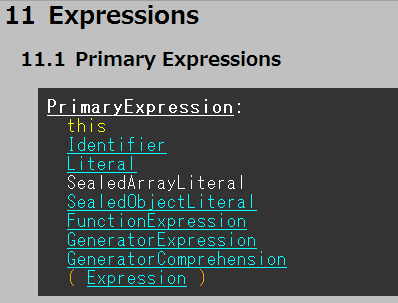
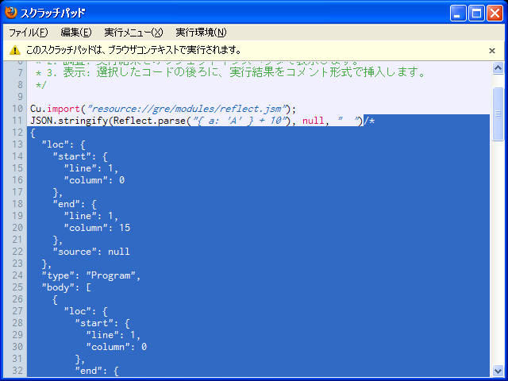
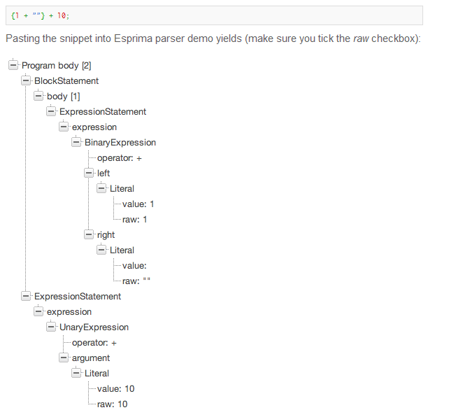

ECMAScript
next
ES.next 追っかけECMAScript 勉強会 |
僕がやっていること
ECMAScript 6th Syntax Grammer にドラフト版の構文をまとめてます

利用者は、主にConstellationさんです(only疑惑)
SpiderMonkeyのHarmony実装をトラッキングするメタバグがある
【ちょっとわき道】JavaScriptがどう構文解析されるか確認する
Reflect.parse()メソッドprint(JSON.stringify(Reflect.parse("{ a:'A' } + 10"), null, " "))
Reflect.parseと同様ことができるCu.import("resource://gre/modules/reflect.jsm")devtools.chrome.enabledをtrue)が便利

http://ariya.ofilabs.com/2012/04/javascript-syntax-tree-visualization-with-esprima.html
似たようなサンプルが...orz
2012-04-05 追記
あえて言及する必要はないかも？
http://wiki.ecmascript.org/doku.php
ECMAScript に対する提案など
http://js-quasis-libraries-and-repl.googlecode.com/svn/trunk/index.html
This does break the web
ES.next では新たなキーワード候補が多くあるが...どうなってしまうん？
|
おしまい ご清聴ありがとうございました。 |